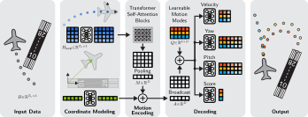

Abstract
Accurate trajectory prediction can improve General Aviation safety in non-towered terminal airspace, where high traffic density increases accident risk. We present ASCENT, a lightweight transformer-based model for multi-modal 3D aircraft trajectory forecasting, which integrates domain-aware 3D coordinate normalization and parameterized predictions. ASCENT employs a transformer-based motion encoder and a query-based decoder, enabling the generation of diverse maneuver hypotheses with low latency. Experiments on the TrajAir and TartanAviation datasets demonstrate that our model outperforms prior baselines, as the encoder effectively captures motion dynamics and the decoder aligns with structured aircraft traffic patterns. Furthermore, ablation studies confirm the contributions of the decoder design, coordinate-frame modeling, and parameterized outputs. These results establish ASCENT as an effective approach for real-time aircraft trajectory prediction in non-towered terminal airspace.
Motivation and Contributions
- General Aviation (GA) represents majority of aircraft, frequently operating between non-towered airports without active Air Traffic Control (ATC)
- The accident rate in GA is approximately 30 times higher than in commercial aviation, mostly occurring near airports
- Accurate trajectory prediction is crucial for early conflict detection and improving airspace safety systems in these unmanaged areas
- Autonomous driving research lead to highly sophisticated prediction models, which provide a strong foundation also for other domains
- Challenges
- Methods from autonomous driving cannot be directly applied due to distinct domain differences
- Airplanes do not follow strict lane networks; flight paths are only loosely defined by runways and airspace procedures
- Aircraft operate in complex 3D space, whereas 2D bird's-eye-view modeling is usually sufficient for vehicles
- Aviation prediction horizons span several minutes, significantly longer than the few seconds required in automotive benchmarks
Key Contributions
➝
Novel transformer-based architecture specifically tailored to the unique challenges of 3D aircraft trajectory prediction
➝
Achieves a new state-of-the-art on the widely used TrajAir dataset across multiple evaluation settings
➝
First to report trajectory prediction results and cross-dataset evaluations on the newly released TartanAviation dataset
➝
Extensive ablation studies demonstrating the effectiveness of the proposed model design choices
Approach
- Agent-Centric Coordinate Normalization: To prevent global position bias and effectively learn local maneuvers (e.g., turns, dives, climbs), we transform historical global coordinates into a local coordinate system. This is achieved by subtracting the most recent position and rotating the data based on the aircraft's estimated horizontal (yaw $\gamma$) and vertical (pitch $\theta$) orientation.
- Novel 3D Positional Embedding: Because local normalization discards global context (like runway proximity), we capture this relationship using a custom 3D positional embedding. This embeds the global position ($x, y, z$) along with the orientation angles ($\gamma$, $\theta$).
- Self-Attention Motion Encoding: The normalized local history is projected into a feature space, combined with temporal encodings, and processed through transformer-based self-attention blocks. Max-pooling reduces this to a single motion feature vector, which is then fused with the global 3D positional embedding.
- Learnable Mode Queries: To generate multi-modal outputs, the decoder broadcasts the encoded motion feature and adds $k$ learnable mode queries. An MLP then decodes the probability scores for each candidate trajectory.
- Kinematic Parameter Prediction: Rather than predicting raw 3D coordinates, the decoder forecasts physical flight parameters (speed, and the sine/cosine of target yaw and pitch angles). The angles are computed via arctangent to ensure stable loss behavior within $[-\pi, \pi]$.
- Global Space Projection: Finally, the model computes the future 3D positions using these kinematic parameters and applies an inverse coordinate transformation to map the predictions back to the global 3D space.
Our model adapts proven best practices from autonomous driving research to tackle the unique challenges of 3D aircraft trajectory prediction. It forecasts multi-modal future 3D positions over $T_f$ steps based on $T_h$ historical steps, generating $k$ trajectory candidates with associated probability scores. The architecture is built on the following core components:

Coordinate Normalization
Results
TrajAir Visualizations
BibTeX
@inproceedings{prutsch2026ascent,
title={{ASCENT: Transformer-Based Aircraft Trajectory Prediction in Non-Towered Terminal Airspace}},
author={Prutsch, Alexander and Schinagl, David and Possegger, Horst},
booktitle={In Proceedings of the IEEE International Conference on Robotics and Automation},
year={2026}
}